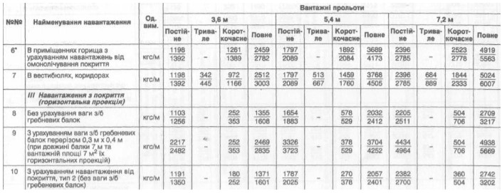

Створити таблицю вантажних польотів
Рисунок 1 - завдання до лабораторної роботи №1
| № | Найменування навантаження | Од.вим | Вантажні польоти | |||||||||||
|---|---|---|---|---|---|---|---|---|---|---|---|---|---|---|
| 3,6 м | 5,4 м | 7,2 м | ||||||||||||
| Постійне | Тривале | Короткочасне | Повне | Постійне | Тривале | Короткочасне | Повне | Постійне | Тривале | Короткочасне | Повне | |||
| 6 | В приміщеннях горища з урахуванням навантажень омолічування покриття | кгс/м | 1198/1292 | 1261/1389 | 2459/2782 | 1797/2089 | 1892/2084 | 3689/4173 | 2396/2785 | 2523/2778 | 4919/5663 | |||
| 7 | В вестибюлях, коридорах | кгс/м | 1198/1292 | 1797/2089 | 2459/2782 | 1797/2089 | 3689/4173 | 2396/2785 | 1892/2084 | 2523/2778 | 4919/5663 | |||
| ІІІ Навантаження з покриття (горизонтальна проекція) | ||||||||||||||
| 8 | Без урахування ваги з/б гребневих балок | кгс/м | 1198/1292 | 1261/1389 | 2459/2782 | 1797/2089 | 1892/2084 | 3689/4173 | 2396/2785 | 2523/2778 | 4919/5663 | |||
| 9 | З урахування ваги з/б гребневих балок перерізом 0,3Х0,4 м | кгс/м | 1198/1292 | 1261/1389 | 2459/2782 | 1797/2089 | 1892/2084 | 3689/4173 | 2396/2785 | 2523/2778 | 4919/5663 | |||
| 10 | З урахуванням навантаження від покриття | кгс/м | 1198/1292 | 1261/1389 | 2459/2782 | 1797/2089 | 1892/2084 | 3689/4173 | 2396/2785 | 2523/2778 | 4919/5663 | |||